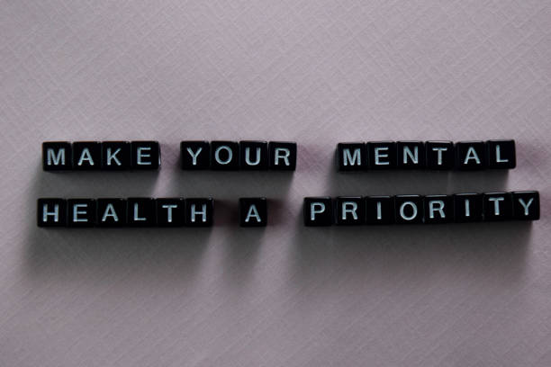
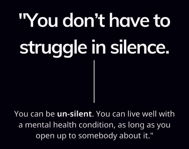

"Mental health matters, now more than ever before."
Welcome everyone !
My name is Mayssane, I created this page to spread awarness about the mental health's importance.
Let's work on it all together ☀️

With the onset of the COVID-19 pandemic, mental health and mental illness have been brought to the forefront of our minds. The pandemic has drastically changed many aspects of our lives and has brought a great sense of worry, insecurity, and fear.
No one has been left unaaffected by COVID-19 and this is why it’s more important than ever to be attune to our mental health needs and make our mental wellbeing a priority.
What does "mental health" mean ? 🧐
Mental health is defined as the state of mental balance and well-being of a person at a given time.
It is about how you feel, think, act and interact with the surrounding world.
Being in good mental health allows us to reach our full potential, cope with normal life stresses and contribute to our community.

What are the mental disorders ? 👀
Mental disorders are serious conditions which can affect your thinking, mood, and behavior. They may be occasional or long-lasting. They can affect your ability to relate to others and function each day.
Mental disorders are common, and there are treatments.
People with mental disorders can get better, and many of them recover completely !

Why is mental health important ? 🧠
More than 450 million people suffer from mental disorders. According to WHO, by the year 2020, depression will constitute the second largest disease burden worldwide (Murray & Lopez, 1996).
Global burden of mental health will be well beyond the treatment capacities of developed and developing countries. The social and economic costs associated with growing burden of mental ill health focused the possibilities for promoting mental health as well as preventing and treating mental illness.
Thus the Mental Health is linked to behaviour and seen as fundamental to physical health and quality of life.

What can affect my mental health and how can I solve this ? 💡
☞ Talk to someone who is aware of the mental health's importance: Call me, message me, contact another support line, see a doctor, counsellor or psychologist.
☞ Learn : find out as much as possible about your condition, what can trigger symptoms, the best treatments, and how to help yourself.
Personally, watching TED talks videos helped me a lot, here are some of them :
☞ Change your old habits : surround your self with people who lift you up, do some sports at least 3 times a weak, go out and discover new places.
☞ Community help : As well as getting the best treatments you can, find out what support is available in the community that suits your individual needs. Everyone is unique and it’s important to find the kind of support that helps you best at any one time.
About me 🧚🏼♀️
My full name is Mayssane Lahjomri, I'm 20 years old and I'm Moroccan.
I currently study at KEDGE BUSINESS SCHOOL in the L3 PGE program.
I've struggled a lot with anxiety in the past years and thanks to a lot of selfwork I overcame it.
I hope that I'll be able to stand by the side of every person who needs support so we can all be proud of ourselves 💛🏆